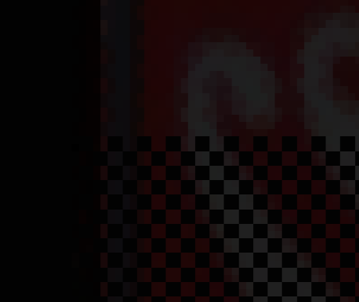

This page is a breakdown of my dissertation research so far! It's not complete, its still ongoing, but I think really worth a look.
"Checkerboarded rendering" refers to a family of upsampling techniques that use a reduced size render-target, in conjuction with the previous full-frame render result to construct a new frame image from partially complete data.
"Checkerboarded rendering" refers to a family of upsampling techniques that use a reduced size render-target, in conjuction with the previous full-frame render result to construct a new frame image from partially complete data.
The core of the technique is that alternating 2x2 regions render every frame, with the rendered region flipping. Imagining the final presented image as a checkerboard, on one frame only the black squares would be truly rendered; on the next frame only the white.

While many techniques use a quarter sized render target (half width, half height) with an offset viewport to achieve this, I use an alternate approach, which is a depth-prepass of sorts. We simply render the 2x2 black or white squares, at a set depth of 0, meaning nothing will ever pass their depth test.
The image shows a sample of the starting depth buffer, with each red and black square representing a 2x2 pixel region.
The image shows a sample of the starting depth buffer, with each red and black square representing a 2x2 pixel region.

We also complete a motion pass; for each object, we provide its current object matrix, and the current view matrix, as well as what they were last frame. From this, we can calculate a difference in screen space, for a given pixel between frames.
The image provided is a representation but is not to be fully trusted; the vectors are so small due to the high frame rate that they don't show in a float format, PIX will only show them in integer formats, so these would be of a much smaller magnitude than suggested. This is solely for visualisation.
The image provided is a representation but is not to be fully trusted; the vectors are so small due to the high frame rate that they don't show in a float format, PIX will only show them in integer formats, so these would be of a much smaller magnitude than suggested. This is solely for visualisation.

Then comes the final composition step; we take our half-rendering, our motion buffer and the final output of the last frame. We then, for each pixel that was not rendered, we sample the motion buffer, trace back along the stored vector, and sample the end of frame buffer at that position.


In most cases this will find the truly rendered colour of that pixel from last frame; however in rare instances we'll get bad samples, so we clamp the found colour between its two truly rendered neighbours, as a final measure.
You can see here part of the screen mid re-construction; its all handled in compute shaders, with no resource contention. You may notice some of the artefacting in this picture; this is the tradeoff for speed, and is to be the subject of future improvements.
You can see here part of the screen mid re-construction; its all handled in compute shaders, with no resource contention. You may notice some of the artefacting in this picture; this is the tradeoff for speed, and is to be the subject of future improvements.
This is the current state of the implementation; there is a small amount of artefacting visible, but it remains to be seen how much of an impact this will have on percieved quality.
The current thrust of work is implementing adaptive strategies; using the motion buffer, we can calculate a reshading confidence value, where we can force reshades of areas likely to see artefacts, or more hopefully, delay shading for more than a single frame if it appears safe. Previous research has suggested this could be the case.
The current thrust of work is implementing adaptive strategies; using the motion buffer, we can calculate a reshading confidence value, where we can force reshades of areas likely to see artefacts, or more hopefully, delay shading for more than a single frame if it appears safe. Previous research has suggested this could be the case.